巴黎奥运会女排1/4决赛，中国队不敌土耳其队，中国女排无缘4强。姑娘们继续加油！
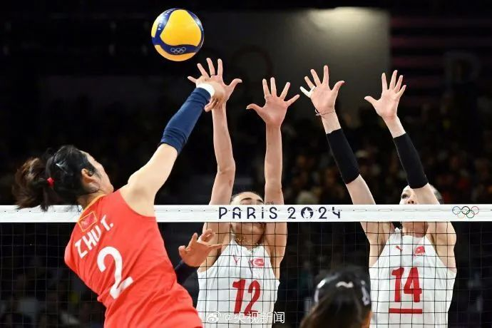
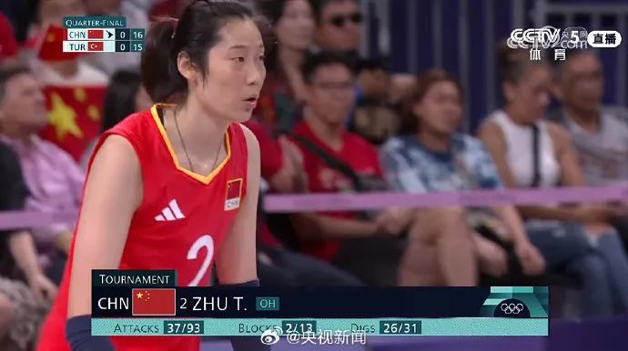
赛程回顾
中国女排在拿下第一局后，被土耳其女排连下两局。大比分1:2落后。
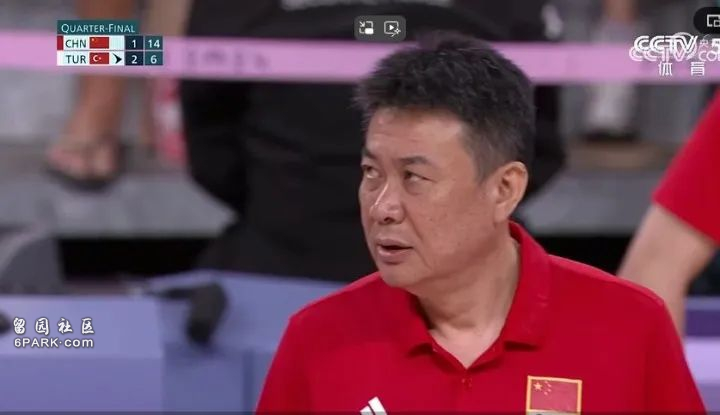
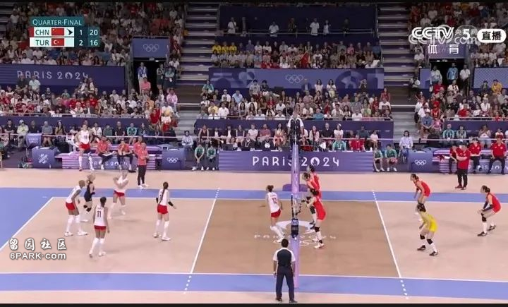
第四局比赛相当胶着，中国女排姑娘率先拿到局点。最终25:21拿下。大比分2:2。
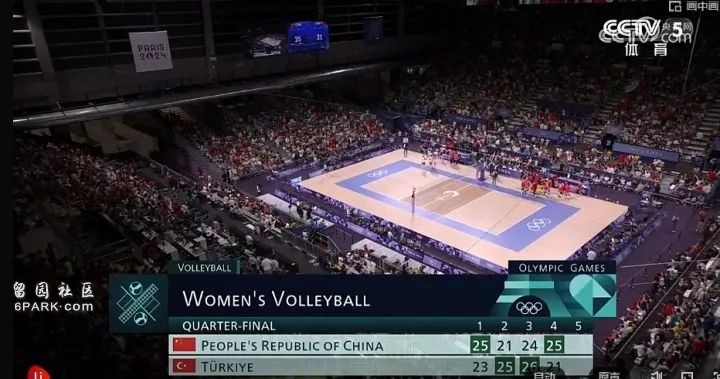
最后一局决胜局，双方竞争非常激烈。最终女排2:3不敌土耳其。结束了巴黎奥运会的比赛。
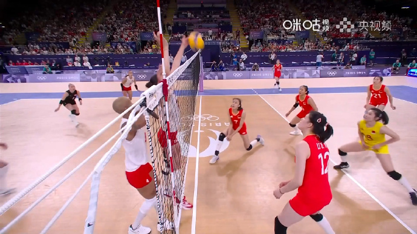
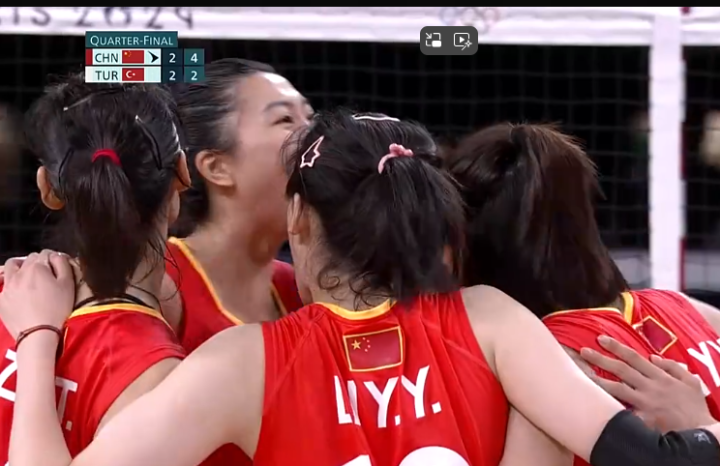
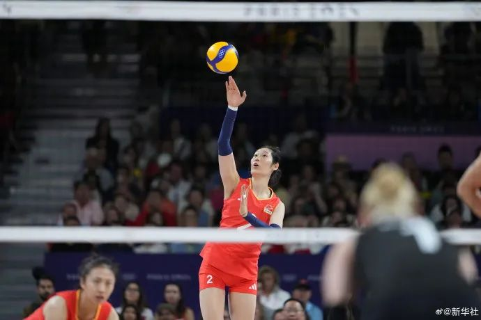
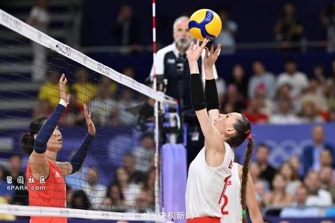
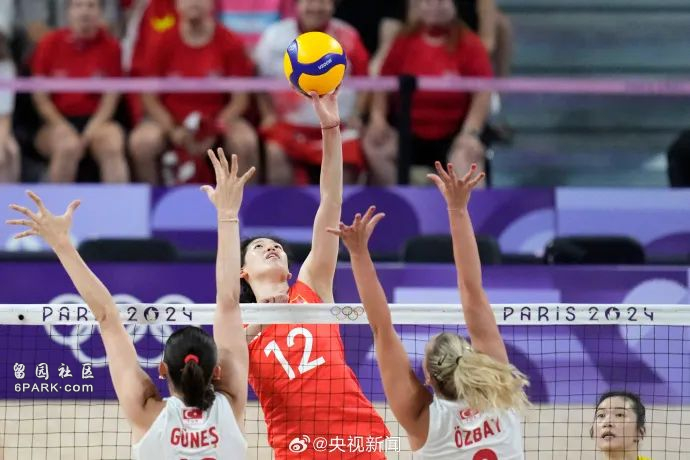
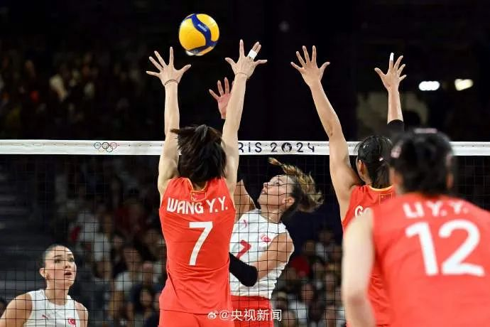
此前中国女排苦战五局以3-2战胜卫冕冠军美国队，
朱婷在接受采访时称，“对于我来说这是我最后一届了，应该珍惜每一场球”。
网友留言：
吃糖吗可甜了l ：中国女排你们是最棒的，姑娘们辛苦了
每天都要氦铍 ：已经很棒了，落后一局的情况下还把比赛拖入了决胜局，很厉害了
钰清光羽love ：已经很棒，对手4号瓦尔加斯太可怕了
Gotta-CallU ：有点点可惜，但是发挥其实很不错了
迷妹不迷路_福气2024:辛苦了 已经很棒了 每一分都咬得很紧
Advertisements